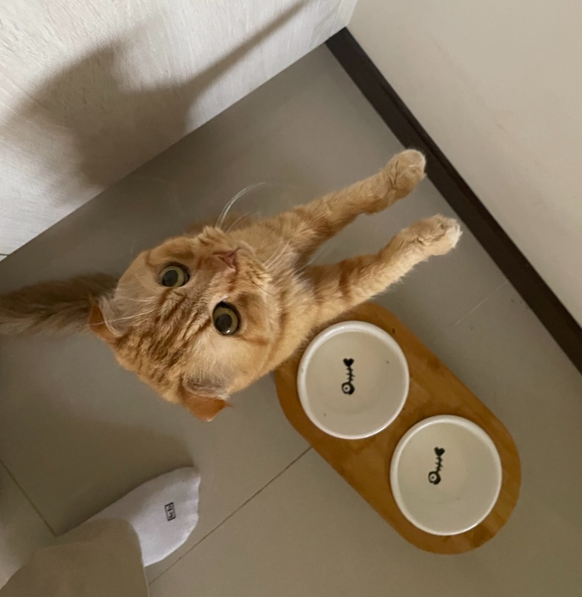

Mantou's Craving for Food
Published on: 2024-10-21
Mantou is a glutton who uses his big, watery eyes to beg for food—no one can resist him. He even stands up when he knows I'm grabbing food for him. His cuteness is absolutely irresistible!
Here's a photo of him looking so adorable, I couldn't resist snapping it while he begged for his favorite treat. Mantou has a way of stealing hearts with his eyes!